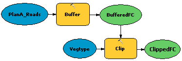
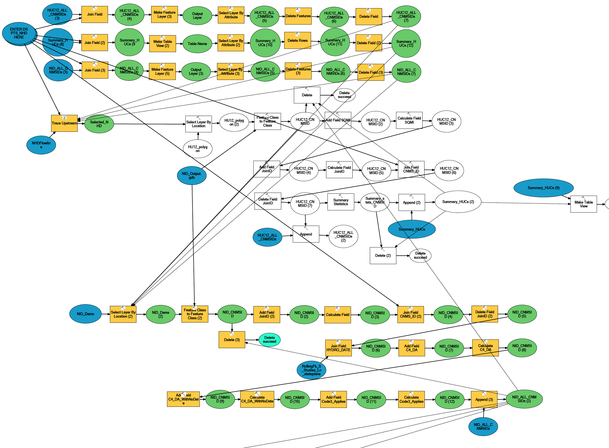
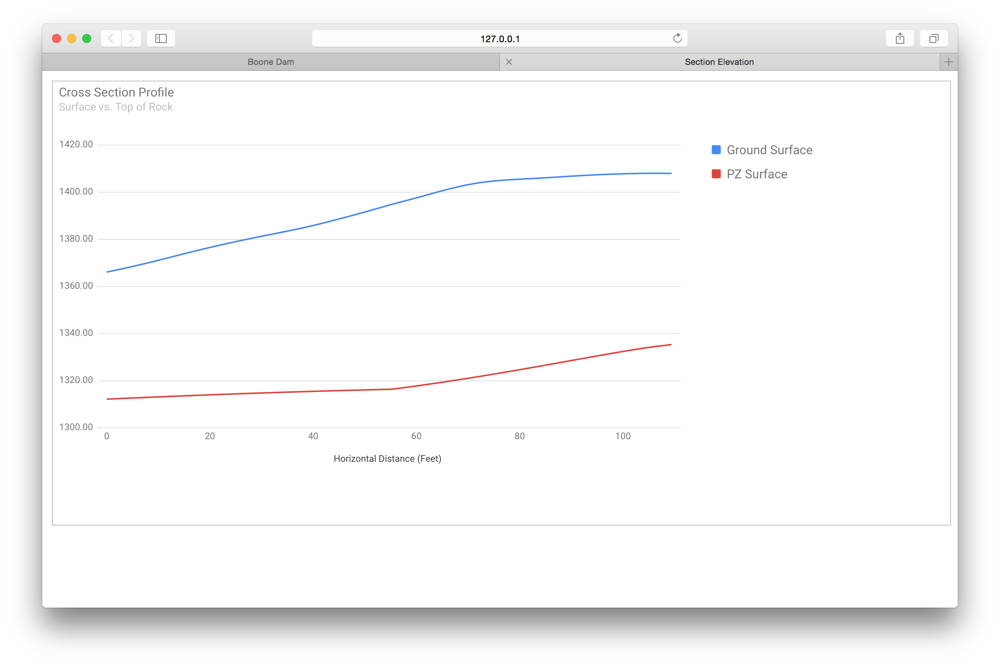

Ohio GIS 2015
Matthew Basanta, GISP
Nick Soltes, GISP
@mbasanta
Introduction
- Benefits of custom tools
- Identifiying when a custom tool is useful
- Basic types of GIS tools
- Getting started with custom tools
- Examples
- Questions
Benefits of Custom Tools
- Saves time
- Workflow control
- Retains knowlege of uncommon tasks
When is a Tool Useful
- Frequent tasks
- Infrequent tasks
- Preparing tasks for other staff
- Automating background tasks
Types of GIS Tools
- Model Builder
- Python
- .NET
Model Builder
- Combines existing geoprocessing tools
- Can incorporate scripts and nested models
- Ideal for routine task automation
Getting Starting with Model Builder
- ArcCatalog is all you need!
- Automate one of your routine task
- Good for simple tasks
- Export as a Python script and schedule
Model Builder Example
A Good One

Model Builder Example
A Bad One

Python
- Utilize all geoprocessing tools
- Utilize much of the ArcObjects library
- Utilize ALL of the Python framework
- Low threshold to entry
- Very powerful with experience
Getting Started with Python
- Download an example
- Examine and adjust an existing Model Builder export
- Online resources
Python Example
- Monitor Instrumentation
- View real time subsurface profiles



Show me the Code!
- Mixture of Python and Psuedo-code
- Tryin' to keep it simple
- Website sends the line verticies to the server as 2-d array
in_src = '[
[822.7,311.5],[772.5,142.5],...
]'
Create the Polyline
in_rows = json.loads(in_src)
arcpy.CreateFeatureClass(WORKSPACE, PROFILE, ...)
for row in in_rows:
point.X = row[0]
point.Y = row[1]
array.add(point)
polyline = arcpy.Polyline(array)
feat.shape = polyline
Create the Profile
profile_dbf = os.path.join(WORKSPACE, "profile.dbf")
arcpy.CheckOutExtension('3D')
arcpy.StackProfile_3d(PROFILE, SURFACE, profile_dbf)
arcpy.CheckInExtension('3D')
Create the Profile Points
Another 2-d Array
with DBF(profile_dbf) as table:
for row in table:
data_pt = [row['X'], row['Y1'], row['Y2']]
profile_data.append(data_pt)
json.dumps(profile_data)
.NET
- Very capable, can access all of ArcObjects
- More difficult debugging, logging, & error handling
- Easy to upgrade from VBA
- Ideal for...
Getting Started with .NET
- ASDF
.NET Example
- ASDF
Questions?
- Matthew.Basanta@Stantec.com
- Nicholas.Soltes@Stantec.com